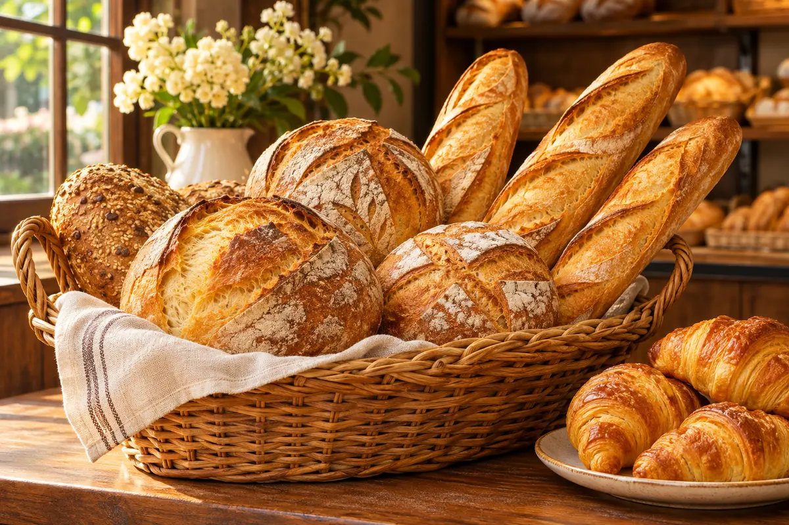

Produtos variados
Consulte as opções disponíveis.

Feito com carinho todos os dias.
Ver cardápioImagem ilustrativa. Trocar por foto real autorizada antes da publicação final.
Cascavel — PR
Estamos no bairro Santa Cruz. Veja a rota e fale com a equipe para confirmar informações de atendimento.
Consulte as opções disponíveis.
Escolha algo gostoso para a mesa.
Consulte disponibilidade pelo WhatsApp.
Rua Xavantes, no bairro Santa Cruz.
Consulte produtos, encomendas e informações direto com a equipe.